import torch
import matplotlib.pyplot as plt 📘 Note Format Guide
This format serves as a structured guide for organizing lecture content, personal interpretation, experiments, and study-related questions.
| Type | What It Means | When I Use It |
|---|---|---|
| 📝 Lecture | Original material from the professor’s notes | When I’m referencing core concepts or provided code |
| 🗣️ In-Class Note | Verbal explanations shared during the lecture | When I want to record something the professor said in class but didn’t include in the official notes |
| ✍️ My Note | My thoughts, interpretations, or additional explanations | When I reflect on or explain something in my own words |
| 🔬 Experiment | Code I tried out or changed to explore further | When I test variations or go beyond the original example |
| ❓ Question | Questions I had while studying | When I want to revisit or research something more deeply |
📝 🗣️ ✍️ 🔬 ❓
1. 강의노트 원본 및 영상 링크
2. Imports 📝
plt.rcParams['figure.figsize'] = (4.5, 3.0)3. 회귀모형 – intro 📝
A. 아이스 아메리카노 (가짜자료)
- 카페주인인 박혜원씨는 온도와 아이스아메리카노 판매량이 관계가 있다는 것을 알았다. 구체적으로는
“온도가 높아질 수록 (=날씨가 더울수록) 아이스아메리카노의 판매량이 증가”
한다는 사실을 알게 되었다. 이를 확인하기 위해서 아래와 같이 100개의 데이터를 모았다.
temp = [-2.4821, -2.3621, -1.9973, -1.6239, -1.4792, -1.4635, -1.4509, -1.4435,
-1.3722, -1.3079, -1.1904, -1.1092, -1.1054, -1.0875, -0.9469, -0.9319,
-0.8643, -0.7858, -0.7549, -0.7421, -0.6948, -0.6103, -0.5830, -0.5621,
-0.5506, -0.5058, -0.4806, -0.4738, -0.4710, -0.4676, -0.3874, -0.3719,
-0.3688, -0.3159, -0.2775, -0.2772, -0.2734, -0.2721, -0.2668, -0.2155,
-0.2000, -0.1816, -0.1708, -0.1565, -0.1448, -0.1361, -0.1057, -0.0603,
-0.0559, -0.0214, 0.0655, 0.0684, 0.1195, 0.1420, 0.1521, 0.1568,
0.2646, 0.2656, 0.3157, 0.3220, 0.3461, 0.3984, 0.4190, 0.5443,
0.5579, 0.5913, 0.6148, 0.6469, 0.6469, 0.6523, 0.6674, 0.7059,
0.7141, 0.7822, 0.8154, 0.8668, 0.9291, 0.9804, 0.9853, 0.9941,
1.0376, 1.0393, 1.0697, 1.1024, 1.1126, 1.1532, 1.2289, 1.3403,
1.3494, 1.4279, 1.4994, 1.5031, 1.5437, 1.6789, 2.0832, 2.2444,
2.3935, 2.6056, 2.6057, 2.6632]sales= [-8.5420, -6.5767, -5.9496, -4.4794, -4.2516, -3.1326, -4.0239, -4.1862,
-3.3403, -2.2027, -2.0262, -2.5619, -1.3353, -2.0466, -0.4664, -1.3513,
-1.6472, -0.1089, -0.3071, -0.6299, -0.0438, 0.4163, 0.4166, -0.0943,
0.2662, 0.4591, 0.8905, 0.8998, 0.6314, 1.3845, 0.8085, 1.2594,
1.1211, 1.9232, 1.0619, 1.3552, 2.1161, 1.1437, 1.6245, 1.7639,
1.6022, 1.7465, 0.9830, 1.7824, 2.1116, 2.8621, 2.1165, 1.5226,
2.5572, 2.8361, 3.3956, 2.0679, 2.8140, 3.4852, 3.6059, 2.5966,
2.8854, 3.9173, 3.6527, 4.1029, 4.3125, 3.4026, 3.2180, 4.5686,
4.3772, 4.3075, 4.4895, 4.4827, 5.3170, 5.4987, 5.4632, 6.0328,
5.2842, 5.0539, 5.4538, 6.0337, 5.7250, 5.7587, 6.2020, 6.5992,
6.4621, 6.5140, 6.6846, 7.3497, 8.0909, 7.0794, 6.8667, 7.4229,
7.2544, 7.1967, 9.5006, 9.0339, 7.4887, 9.0759, 11.0946, 10.3260,
12.2665, 13.0983, 12.5468, 13.8340]🗣️ 음수 판매량은 일단 무시
여기에서 temp는 평균기온이고, sales는 아이스아메리카노 판매량이다. 평균기온과 판매량의 그래프를 그려보면 아래와 같다.
plt.plot(temp,sales,'o')🗣️ 약간의 오차는 있지만 선으로 보임
오늘 바깥의 온도는 0.5도 이다. 아이스 아메라카노를 몇잔정도 만들어 두면 좋을까?
🗣️ 이 그래프를 보고 4.5잔 정도로 짐작 가능
B. 가짜자료를 만든 방법
- 방법1: \(y_i= w_0+w_1 x_i +\epsilon_i = 2.5 + 4x_i +\epsilon_i, \quad i=1,2,\dots,n\)
🗣️(
xi = 온도 = temp
yi = 판매량 = sales
판매량 = 2.5 + 4*온도 + 오차
torch.randn(10) # 표준정규분포에서 10개 값 추출, 길이가 10인 vector (column vector인지 row vector인지는 모름)tensor([-0.4351, -0.4066, 1.2577, -1.1443, 0.3941, -0.2229, -0.4337, 0.8736,
0.6216, 1.0963])torch.randn(100).sort() # 100개 값을 정렬 / 앞은 정렬된 값, 뒤는 인덱스torch.return_types.sort(
values=tensor([-3.3450e+00, -2.3363e+00, -1.7533e+00, -1.6534e+00, -1.4996e+00,
-1.4218e+00, -1.3757e+00, -1.3314e+00, -1.1898e+00, -1.1594e+00,
-1.1386e+00, -1.0975e+00, -1.0961e+00, -1.0899e+00, -1.0250e+00,
-9.7851e-01, -9.1254e-01, -8.8307e-01, -8.7845e-01, -8.4915e-01,
-7.4344e-01, -7.0972e-01, -7.0845e-01, -6.8746e-01, -6.7488e-01,
-6.6512e-01, -6.0503e-01, -5.8921e-01, -5.4838e-01, -5.1363e-01,
-5.0996e-01, -4.7537e-01, -4.3955e-01, -3.5707e-01, -3.4237e-01,
-3.4013e-01, -3.2890e-01, -3.2078e-01, -3.0216e-01, -2.9112e-01,
-2.8083e-01, -2.4387e-01, -2.4171e-01, -2.0109e-01, -1.9779e-01,
-1.9549e-01, -5.8397e-02, -2.5842e-02, -2.2056e-02, 2.0055e-03,
1.0348e-02, 2.2201e-02, 2.5445e-02, 2.6868e-02, 6.2116e-02,
1.3408e-01, 1.5172e-01, 2.0091e-01, 2.3218e-01, 2.5000e-01,
2.7442e-01, 2.8144e-01, 3.4857e-01, 3.7494e-01, 4.4520e-01,
4.8013e-01, 4.9466e-01, 5.0311e-01, 5.7595e-01, 6.2995e-01,
6.3221e-01, 6.5666e-01, 6.5788e-01, 6.6027e-01, 6.7909e-01,
7.1635e-01, 7.1752e-01, 7.2141e-01, 8.0059e-01, 8.0419e-01,
8.0801e-01, 8.1830e-01, 8.9444e-01, 9.6222e-01, 9.9973e-01,
1.1303e+00, 1.1527e+00, 1.2046e+00, 1.2086e+00, 1.2469e+00,
1.2752e+00, 1.2872e+00, 1.3125e+00, 1.4296e+00, 1.4390e+00,
1.5448e+00, 1.6129e+00, 1.6454e+00, 1.6769e+00, 1.7580e+00]),
indices=tensor([81, 19, 56, 18, 89, 54, 27, 31, 65, 85, 94, 47, 0, 7, 8, 57, 14, 92,
3, 12, 86, 48, 9, 82, 62, 78, 1, 28, 32, 67, 21, 53, 10, 30, 23, 5,
88, 24, 63, 40, 20, 77, 34, 87, 99, 80, 41, 4, 69, 90, 35, 72, 58, 11,
22, 42, 76, 95, 74, 38, 46, 59, 91, 68, 43, 44, 50, 96, 51, 6, 29, 13,
66, 49, 73, 2, 70, 93, 97, 16, 15, 98, 55, 33, 39, 84, 25, 61, 17, 64,
45, 26, 75, 71, 79, 37, 60, 83, 36, 52]))a = torch.randn(100).sort()
type(a)torch.return_types.sorta[0]tensor([-2.8188e+00, -2.7746e+00, -2.5355e+00, -2.4374e+00, -2.2716e+00,
-2.1492e+00, -1.8555e+00, -1.8281e+00, -1.6228e+00, -1.6164e+00,
-1.5151e+00, -1.5046e+00, -1.4989e+00, -1.4708e+00, -1.4605e+00,
-1.3748e+00, -1.3521e+00, -1.3183e+00, -1.2710e+00, -1.2416e+00,
-1.1459e+00, -1.0949e+00, -1.0907e+00, -1.0903e+00, -1.0481e+00,
-1.0313e+00, -1.0079e+00, -1.0003e+00, -9.9874e-01, -9.9081e-01,
-9.8943e-01, -9.7448e-01, -9.4772e-01, -9.4282e-01, -9.1282e-01,
-8.8605e-01, -8.6893e-01, -8.5283e-01, -7.8566e-01, -7.7867e-01,
-7.6961e-01, -7.4827e-01, -6.6928e-01, -6.3990e-01, -5.9842e-01,
-5.8057e-01, -5.5388e-01, -5.1941e-01, -5.1005e-01, -4.9040e-01,
-4.7796e-01, -3.9862e-01, -3.9854e-01, -3.8835e-01, -3.7719e-01,
-3.6587e-01, -3.0923e-01, -3.0278e-01, -2.5337e-01, -2.1358e-01,
-1.7441e-01, -1.4875e-01, -5.6163e-02, -3.3250e-02, -2.6646e-02,
2.1082e-03, 1.3442e-02, 9.5665e-02, 1.0434e-01, 1.2852e-01,
1.8255e-01, 2.2326e-01, 2.3160e-01, 2.5853e-01, 2.6803e-01,
3.3640e-01, 3.6288e-01, 3.7120e-01, 3.8451e-01, 4.0117e-01,
4.3763e-01, 4.5193e-01, 5.2404e-01, 6.1333e-01, 6.7461e-01,
6.8081e-01, 8.0477e-01, 9.1538e-01, 9.5395e-01, 1.0907e+00,
1.1139e+00, 1.1281e+00, 1.2559e+00, 1.2686e+00, 1.3258e+00,
1.3563e+00, 1.3864e+00, 1.5558e+00, 1.6258e+00, 2.1654e+00])x,_ = torch.randn(100).sort() # 언패킹
xtensor([-2.8984, -2.6607, -2.2449, -2.2072, -2.1918, -2.1538, -1.9428, -1.9416,
-1.8612, -1.6956, -1.6357, -1.4785, -1.4322, -1.2127, -1.1737, -0.9456,
-0.9244, -0.8456, -0.8190, -0.7925, -0.7609, -0.7305, -0.7011, -0.6806,
-0.6442, -0.6117, -0.6059, -0.5994, -0.4920, -0.4066, -0.3879, -0.3867,
-0.3612, -0.3604, -0.3142, -0.3112, -0.2940, -0.2812, -0.2753, -0.2665,
-0.2145, -0.2106, -0.1864, -0.1633, -0.1470, -0.1331, -0.1316, -0.0994,
-0.0954, -0.0717, -0.0586, -0.0329, 0.0095, 0.0182, 0.0214, 0.0915,
0.0952, 0.1077, 0.1124, 0.1612, 0.1614, 0.1969, 0.2003, 0.3242,
0.3424, 0.3925, 0.4078, 0.4468, 0.4536, 0.5199, 0.5238, 0.5563,
0.5595, 0.6236, 0.6372, 0.6451, 0.6630, 0.7122, 0.7335, 0.7569,
0.7589, 0.8969, 0.9318, 0.9552, 1.0023, 1.0198, 1.1083, 1.1978,
1.2752, 1.2928, 1.3265, 1.3825, 1.4325, 1.5292, 1.6095, 1.6239,
1.7316, 2.0886, 2.3070, 3.2682])torch.manual_seed(43052) # 값 고정
x,_ = torch.randn(100).sort()
xtensor([-2.4821, -2.3621, -1.9973, -1.6239, -1.4792, -1.4635, -1.4509, -1.4435,
-1.3722, -1.3079, -1.1904, -1.1092, -1.1054, -1.0875, -0.9469, -0.9319,
-0.8643, -0.7858, -0.7549, -0.7421, -0.6948, -0.6103, -0.5830, -0.5621,
-0.5506, -0.5058, -0.4806, -0.4738, -0.4710, -0.4676, -0.3874, -0.3719,
-0.3688, -0.3159, -0.2775, -0.2772, -0.2734, -0.2721, -0.2668, -0.2155,
-0.2000, -0.1816, -0.1708, -0.1565, -0.1448, -0.1361, -0.1057, -0.0603,
-0.0559, -0.0214, 0.0655, 0.0684, 0.1195, 0.1420, 0.1521, 0.1568,
0.2646, 0.2656, 0.3157, 0.3220, 0.3461, 0.3984, 0.4190, 0.5443,
0.5579, 0.5913, 0.6148, 0.6469, 0.6469, 0.6523, 0.6674, 0.7059,
0.7141, 0.7822, 0.8154, 0.8668, 0.9291, 0.9804, 0.9853, 0.9941,
1.0376, 1.0393, 1.0697, 1.1024, 1.1126, 1.1532, 1.2289, 1.3403,
1.3494, 1.4279, 1.4994, 1.5031, 1.5437, 1.6789, 2.0832, 2.2444,
2.3935, 2.6056, 2.6057, 2.6632])# temp # 위의 temp와 x는 동일sales[0] # -2.4821 * 4 + 2.5 + 오차-8.542torch.manual_seed(43052)
x,_ = torch.randn(100).sort()
eps = torch.randn(100)*0.5 # 오차 만들기 (분산 작게하려고 0.5를 곱함)-2.4821 * 4 + 2.5 + eps[0] # sales[0]과 동일tensor(-8.5420)x[1] * 4 + 2.5 + eps[1] # 두 번째 값tensor(-6.5767)sales[1]-6.5767torch.manual_seed(43052)
x,_ = torch.randn(100).sort()
eps = torch.randn(100)*0.5
y = x * 4 + 2.5 + eps # 브로드캐스팅 이용temp[:5],sales[:5]([-2.4821, -2.3621, -1.9973, -1.6239, -1.4792],
[-8.542, -6.5767, -5.9496, -4.4794, -4.2516])x[:5], y[:5] # 위와 동일(tensor([-2.4821, -2.3621, -1.9973, -1.6239, -1.4792]),
tensor([-8.5420, -6.5767, -5.9496, -4.4794, -4.2516])))🗣️
torch.manual_seed(43052)
x,_ = torch.randn(100).sort()
eps = torch.randn(100)*0.5
y = x * 4 + 2.5 + epsx[:5], y[:5](tensor([-2.4821, -2.3621, -1.9973, -1.6239, -1.4792]),
tensor([-8.5420, -6.5767, -5.9496, -4.4794, -4.2516]))- 방법2: \({\bf y}={\bf X}{\bf W} +\boldsymbol{\epsilon}\)
- \({\bf y}=\begin{bmatrix} y_1 \\ y_2 \\ \dots \\ y_n\end{bmatrix}, \quad {\bf X}=\begin{bmatrix} 1 & x_1 \\ 1 & x_2 \\ \dots \\ 1 & x_n\end{bmatrix}, \quad {\bf W}=\begin{bmatrix} 2.5 \\ 4 \end{bmatrix}, \quad \boldsymbol{\epsilon}= \begin{bmatrix} \epsilon_1 \\ \dots \\ \epsilon_n\end{bmatrix}\)
🗣️(
\(y_1 = 2.5 + 4x_1 + \epsilon_1\)
\(y_2 = 2.5 + 4x_2 + \epsilon_2\)
\(y_3 = 2.5 + 4x_3 + \epsilon_3\) … 을 위와 같이 표현할 수 있음
방법1은 scalar로 표현, 방법2는 matrix로 표현
y # 길이가 100인 vector (방법1) / 방법2는 (100,1) matrix로 표현되어야 함tensor([-8.5420, -6.5767, -5.9496, -4.4794, -4.2516, -3.1326, -4.0239, -4.1862,
-3.3403, -2.2027, -2.0262, -2.5619, -1.3353, -2.0466, -0.4664, -1.3513,
-1.6472, -0.1089, -0.3071, -0.6299, -0.0438, 0.4163, 0.4166, -0.0943,
0.2662, 0.4591, 0.8905, 0.8998, 0.6314, 1.3845, 0.8085, 1.2594,
1.1211, 1.9232, 1.0619, 1.3552, 2.1161, 1.1437, 1.6245, 1.7639,
1.6022, 1.7465, 0.9830, 1.7824, 2.1116, 2.8621, 2.1165, 1.5226,
2.5572, 2.8361, 3.3956, 2.0679, 2.8140, 3.4852, 3.6059, 2.5966,
2.8854, 3.9173, 3.6527, 4.1029, 4.3125, 3.4026, 3.2180, 4.5686,
4.3772, 4.3075, 4.4895, 4.4827, 5.3170, 5.4987, 5.4632, 6.0328,
5.2842, 5.0539, 5.4538, 6.0337, 5.7250, 5.7587, 6.2020, 6.5992,
6.4621, 6.5140, 6.6846, 7.3497, 8.0909, 7.0794, 6.8667, 7.4229,
7.2544, 7.1967, 9.5006, 9.0339, 7.4887, 9.0759, 11.0946, 10.3260,
12.2665, 13.0983, 12.5468, 13.8340])x # 길이가 100인 vector (방법1) / 방법2는 [1 x] 이런식으로 표현되어야 함tensor([-2.4821, -2.3621, -1.9973, -1.6239, -1.4792, -1.4635, -1.4509, -1.4435,
-1.3722, -1.3079, -1.1904, -1.1092, -1.1054, -1.0875, -0.9469, -0.9319,
-0.8643, -0.7858, -0.7549, -0.7421, -0.6948, -0.6103, -0.5830, -0.5621,
-0.5506, -0.5058, -0.4806, -0.4738, -0.4710, -0.4676, -0.3874, -0.3719,
-0.3688, -0.3159, -0.2775, -0.2772, -0.2734, -0.2721, -0.2668, -0.2155,
-0.2000, -0.1816, -0.1708, -0.1565, -0.1448, -0.1361, -0.1057, -0.0603,
-0.0559, -0.0214, 0.0655, 0.0684, 0.1195, 0.1420, 0.1521, 0.1568,
0.2646, 0.2656, 0.3157, 0.3220, 0.3461, 0.3984, 0.4190, 0.5443,
0.5579, 0.5913, 0.6148, 0.6469, 0.6469, 0.6523, 0.6674, 0.7059,
0.7141, 0.7822, 0.8154, 0.8668, 0.9291, 0.9804, 0.9853, 0.9941,
1.0376, 1.0393, 1.0697, 1.1024, 1.1126, 1.1532, 1.2289, 1.3403,
1.3494, 1.4279, 1.4994, 1.5031, 1.5437, 1.6789, 2.0832, 2.2444,
2.3935, 2.6056, 2.6057, 2.6632])[1 x] 만들기
torch.ones(100) , x # 길이가 100인 vector(tensor([1., 1., 1., 1., 1., 1., 1., 1., 1., 1., 1., 1., 1., 1., 1., 1., 1., 1.,
1., 1., 1., 1., 1., 1., 1., 1., 1., 1., 1., 1., 1., 1., 1., 1., 1., 1.,
1., 1., 1., 1., 1., 1., 1., 1., 1., 1., 1., 1., 1., 1., 1., 1., 1., 1.,
1., 1., 1., 1., 1., 1., 1., 1., 1., 1., 1., 1., 1., 1., 1., 1., 1., 1.,
1., 1., 1., 1., 1., 1., 1., 1., 1., 1., 1., 1., 1., 1., 1., 1., 1., 1.,
1., 1., 1., 1., 1., 1., 1., 1., 1., 1.]),
tensor([-2.4821, -2.3621, -1.9973, -1.6239, -1.4792, -1.4635, -1.4509, -1.4435,
-1.3722, -1.3079, -1.1904, -1.1092, -1.1054, -1.0875, -0.9469, -0.9319,
-0.8643, -0.7858, -0.7549, -0.7421, -0.6948, -0.6103, -0.5830, -0.5621,
-0.5506, -0.5058, -0.4806, -0.4738, -0.4710, -0.4676, -0.3874, -0.3719,
-0.3688, -0.3159, -0.2775, -0.2772, -0.2734, -0.2721, -0.2668, -0.2155,
-0.2000, -0.1816, -0.1708, -0.1565, -0.1448, -0.1361, -0.1057, -0.0603,
-0.0559, -0.0214, 0.0655, 0.0684, 0.1195, 0.1420, 0.1521, 0.1568,
0.2646, 0.2656, 0.3157, 0.3220, 0.3461, 0.3984, 0.4190, 0.5443,
0.5579, 0.5913, 0.6148, 0.6469, 0.6469, 0.6523, 0.6674, 0.7059,
0.7141, 0.7822, 0.8154, 0.8668, 0.9291, 0.9804, 0.9853, 0.9941,
1.0376, 1.0393, 1.0697, 1.1024, 1.1126, 1.1532, 1.2289, 1.3403,
1.3494, 1.4279, 1.4994, 1.5031, 1.5437, 1.6789, 2.0832, 2.2444,
2.3935, 2.6056, 2.6057, 2.6632]))# torch.stack([torch.ones(100) , x]) # 좌우로 합치기 위해 stack 사용
print(torch.stack([torch.ones(100) , x]).shape)
# torch.stack([torch.ones(100) , x], axis=1) # 원했던 결과
print(torch.stack([torch.ones(100) , x], axis=1).shape)
# torch.stack([torch.ones(100) , x]).T # 다른 방법
print(torch.stack([torch.ones(100) , x]).T.shape)torch.Size([2, 100])
torch.Size([100, 2])
torch.Size([100, 2])X = torch.stack([torch.ones(100) , x], axis=1)
W = torch.tensor([[2.5],[4.0]])
y = X@W + eps.reshape(100,1)
y.shapetorch.Size([100, 1])sales[:5][-8.542, -6.5767, -5.9496, -4.4794, -4.2516]y[:5,0]tensor([-8.5420, -6.5767, -5.9496, -4.4794, -4.2516])sales와 y 동일
🔬🗣️(
(참고) 인덱싱 관련 설명
y[:5]tensor([[-8.5420],
[-6.5767],
[-5.9496],
[-4.4794],
[-4.2516]])y는 matrix 이므로
y[:5,[0]] # column vector처럼 됨tensor([[-8.5420],
[-6.5767],
[-5.9496],
[-4.4794],
[-4.2516]])# y[:,:] # y가 그대로 나옴y[:5,:] # 그 중 5개만tensor([[-8.5420],
[-6.5767],
[-5.9496],
[-4.4794],
[-4.2516]])나열 방식만 다르고 값은 sales와 똑같음
)🔬🗣️
X = torch.stack([torch.ones(100) , x], axis=1) # (100, 2)
W = torch.tensor([[2.5],[4.0]]) # (2, 1)
y = X@W + eps.reshape(100,1) # (100, 1)
x # 아마도 (100,) tensor([-2.4821, -2.3621, -1.9973, -1.6239, -1.4792, -1.4635, -1.4509, -1.4435,
-1.3722, -1.3079, -1.1904, -1.1092, -1.1054, -1.0875, -0.9469, -0.9319,
-0.8643, -0.7858, -0.7549, -0.7421, -0.6948, -0.6103, -0.5830, -0.5621,
-0.5506, -0.5058, -0.4806, -0.4738, -0.4710, -0.4676, -0.3874, -0.3719,
-0.3688, -0.3159, -0.2775, -0.2772, -0.2734, -0.2721, -0.2668, -0.2155,
-0.2000, -0.1816, -0.1708, -0.1565, -0.1448, -0.1361, -0.1057, -0.0603,
-0.0559, -0.0214, 0.0655, 0.0684, 0.1195, 0.1420, 0.1521, 0.1568,
0.2646, 0.2656, 0.3157, 0.3220, 0.3461, 0.3984, 0.4190, 0.5443,
0.5579, 0.5913, 0.6148, 0.6469, 0.6469, 0.6523, 0.6674, 0.7059,
0.7141, 0.7822, 0.8154, 0.8668, 0.9291, 0.9804, 0.9853, 0.9941,
1.0376, 1.0393, 1.0697, 1.1024, 1.1126, 1.1532, 1.2289, 1.3403,
1.3494, 1.4279, 1.4994, 1.5031, 1.5437, 1.6789, 2.0832, 2.2444,
2.3935, 2.6056, 2.6057, 2.6632])(100,)을 (100,1)로 바꾸고 싶음
torch.manual_seed(43052)
x,_ = torch.randn(100).sort()
eps = torch.randn(100)*0.5
y = x * 4 + 2.5 + eps
X = torch.stack([torch.ones(100) , x], axis=1) # (100, 2)
W = torch.tensor([[2.5],[4.0]]) # (2, 1)
y = X@W + eps.reshape(100,1) # (100, 1)
x = X[:,[1]]x[:5], y[:5](tensor([[-2.4821],
[-2.3621],
[-1.9973],
[-1.6239],
[-1.4792]]),
tensor([[-8.5420],
[-6.5767],
[-5.9496],
[-4.4794],
[-4.2516]]))temp[:5], sales[:5]([-2.4821, -2.3621, -1.9973, -1.6239, -1.4792],
[-8.542, -6.5767, -5.9496, -4.4794, -4.2516])방법 2처럼 matrix로도 가능하다는 것을 확인
)🗣️
📝(
X = torch.stack([torch.ones(100),x],axis=1)
W = torch.tensor([[2.5],[4.0]])
y = X@W + eps.reshape(100,1)
x = X[:,[1]]✍️ 편의상 위의 코드는 실행시키지 않음
X[:5,:], y[:5,:](tensor([[ 1.0000, -2.4821],
[ 1.0000, -2.3621],
[ 1.0000, -1.9973],
[ 1.0000, -1.6239],
[ 1.0000, -1.4792]]),
tensor([[-8.5420],
[-6.5767],
[-5.9496],
[-4.4794],
[-4.2516]])))📝
- ture와 observed data를 동시에 시각화
🗣️(
plt.plot(temp, sales) # 이러한 데이터를 관측했다고 생각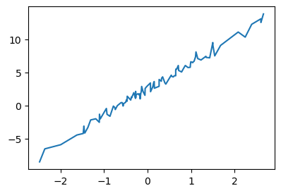
plt.plot(temp, sales, 'o') # scatter plotplt.plot(x, y, 'o') # 위와 동일
x에서 y로 가는 패턴을 찾고 싶음
plt.plot(x, y, 'o', label="observed data") # 관측한 값
plt.legend()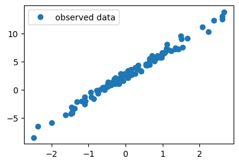
plt.plot(x, y, 'o', label="observed data") # 점선 + epsilon(통계적으로 설명할 수 없는 현상, random)
plt.plot(x, 2.5 + 4*x, '--', label="true") # 원래 관측되어야 했던 값
plt.legend()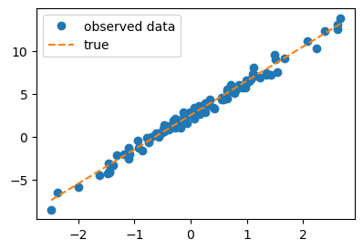
- 하고 싶은 것
- 카페 주인: 온도가 0.5일 때 얼마나 팔릴지 알고 싶음
- 가장 간단: 0.5를 점선 위에 올린 후 y 값을 예측 (0.5 * 4 + 2.5 = 4.5)
- 하지만 실제로는 파란색만 알고 있으므로 위의 방법은 cheating
plt.plot(x,y,'o',label=r"observed data: $(x_i,y_i)$")
#plt.plot(x,2.5+4*x,'--',label=r"true: $(x_i, 4x_i+2.5)$ // $y=4x+2.5$ ")
plt.legend()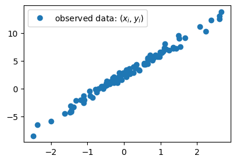
- 하고 싶은 것
- 위의 상태에서 적당한 추세선을 그려서 추정
)🗣️
plt.plot(x,y,'o',label=r"observed data: $(x_i,y_i)$")
#plt.plot(x,2.5+4*x,'--',label=r"true: $(x_i, 4x_i+2.5)$ // $y=4x+2.5$ ")
plt.legend()C. 회귀분석이란?
- 클리셰: 관측한 자료 \((x_i,y_i)\) 가 있음 \(\to\) 우리는 \((x_i,y_i)\)의 관계를 파악하여 새로운 \(x\)가 왔을때 그것에 대한 예측값(predicted value) \(\hat{y}\)을 알아내는 법칙을 알고 싶음 \(\to\) 관계를 파악하기 위해서 \((x_i, y_i)\)의 산점도를 그려보니 \(x_i\)와 \(y_i\)는 선형성을 가지고 있다는 것이 파악됨 \(\to\) 오차항이 등분산성을 가지고 어쩌고 저쩌고… \(\to\) 하여튼 \((x_i,y_i)\) 를 “적당히 잘 관통하는” 어떠한 하나의 추세선을 잘 추정하면 된다.
- 회귀분석이란 산점도를 보고 적당한 추세선을 찾는 것이다. 좀 더 정확하게 말하면 \((x_1,y_1) \dots (x_n,y_n)\) 으로 \(\begin{bmatrix} \hat{w}_0 \\ \hat{w}_1 \end{bmatrix}\) 를 최대한 \(\begin{bmatrix} 2.5 \\ 4 \end{bmatrix}\)와 비슷하게 찾는 것.
given data : \(\big\{(x_i,y_i) \big\}_{i=1}^{n}\)
parameter: \({\bf W}=\begin{bmatrix} w_0 \\ w_1 \end{bmatrix}\)
estimated parameter: \({\bf \hat{W}}=\begin{bmatrix} \hat{w}_0 \\ \hat{w}_1 \end{bmatrix}\)
🗣️ y = ax + b 꼴에서 a, b를 정함
- 더 쉽게 말하면 아래의 그림을 보고 “적당한” 추세선을 찾는 것이다.
plt.plot(x,y,'o',label=r"observed data: $(x_i,y_i)$")
plt.legend()
- 추세선을 그리는 행위 = \((w_0,w_1)\)을 선택하는일
4. 손실함수 📝
# 예제1 – \((\hat{w}_0,\hat{w}_1)=(-5,10)\)을 선택하여 선을 그려보고 적당한지 판단해보자
🗣️(
plt.plot(x,y,'o',label=r"observed data: $(x_i,y_i)$")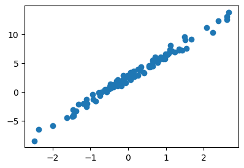
여기에 y = -5 + 10x 을 추세선으로 그리면
plt.plot(x,y,'o',label=r"observed data: $(x_i,y_i)$")
plt.plot(x, -5+10*x, '--', label=r"estimated line")
plt.legend()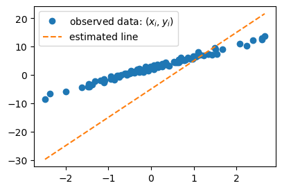
적당하지 않고 이상해보임
아래와 같이도 표현 가능
plt.plot(x,y,'o',label=r"observed data: $(x_i,y_i)$")
What = torch.tensor([[-5.0], [10.0]])
plt.plot(x, X@What, '--', label=r"estimated line")
plt.legend())🗣️
plt.plot(x,y,'o',label=r"observed data: $(x_i,y_i)$")
What = torch.tensor([[-5.0],[10.0]])
plt.plot(x,X@What,'--',label=r"estimated line: $(x_i,\hat{y}_i)$")
plt.legend()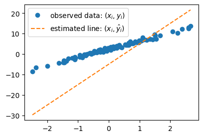
#
# 예제2 – \((\hat{w}_0,\hat{w}_1)=(2.5,3.5)\)을 선택하여 선을 그려보고 적당한지 판단해보자
🗣️ 절편을 올리고 기울기를 낮춤 -> 거의 비슷해짐
plt.plot(x,y,'o',label=r"observed data: $(x_i,y_i)$")
What = torch.tensor([[2.5],[3.5]])
plt.plot(x,X@What,'--',label=r"estimated line: $(x_i,\hat{y}_i)$")
plt.legend()#
# 예제3 – \((\hat{w}_0,\hat{w}_1)=(2.3,3.5)\)을 선택하여 선을 그려보고 적당한지 판단해보자
🗣️(
- (2.5, 3.5), (2.3, 3.5) 둘 다 적당해보이는데 뭐가 더 적당한지 모르겠음
- True 값은 (2.5, 4.0), 예제 2는 2.5라도 맞췄지만 예제 3은 둘 다 틀림
- 하지만 위처럼 비교하는 것 역시 cheating
- 실제로는 그림을 보고 따져야 함
)🗣️
plt.plot(x,y,'o',label=r"observed data: $(x_i,y_i)$")
What = torch.tensor([[2.3],[3.5]])
plt.plot(x,X@What,'--',label=r"estimated line: $(x_i,\hat{y}_i)$")
plt.legend()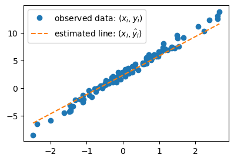
plt.plot(x,y,'o',label=r"observed data: $(x_i,y_i)$")
What = torch.tensor([[2.3],[3.5]])
plt.plot(x,X@What,'--',label=r"estimated: $(x_i,\hat{y}_i)$")
plt.legend()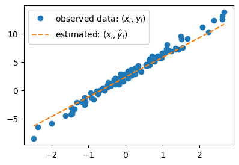
#
# 예제4 – 예제2의 추세선과 예제3의 추세선 중 뭐가 더 적당한가?
- (고민) 왠지 예제2가 더 적당하다고 답해야할 것 같은데.. 육안으로 판단하기 까다롭다..
- 적당함을 수식화 할 수 없을까?
- “적당한 정도”를 판단하기 위한 장치: loss의 개념 도입
\(loss = \sum_{i=1}^{n}(y_i- \hat{y}_i)^2 = \sum_{i=1}^{n}\big(y_i - (\hat{w}_0+\hat{w}_1x_i)\big)^2\)
\(=({\bf y}-\hat{\bf y})^\top({\bf y}-\hat{\bf y})=({\bf y}-{\bf X}\hat{\bf W})^\top({\bf y}-{\bf X}\hat{\bf W})\)
🗣️ 위의 식은 직관적으로 이해할 때 편하고, 아래 식은 코드를 짤 때 편함
- loss의 특징
- \(y_i \approx \hat{y}_i\) 일수록 loss 값이 작음
- \(y_i \approx \hat{y}_i\) 이 되도록 \((\hat{w}_0, \hat{w}_1)\)을 잘 찍으면 loss 값이 작음
- 주황색 점선이 “적당할수록” loss 값이 작음 (그럼 우리 의도대로 된거네?)
- loss를 써먹어보자.
🗣️ 육안으로는 판단하기 어렵지만 숫자로 보니 [[2.5], [3,5]]가 더 잘했다고 할 수 있음
What = torch.tensor([[2.5],[3.5]]) # 예제2에서 찍은 What값
print(f"loss: {torch.sum((y - X@What)**2)}")
What = torch.tensor([[2.3],[3.5]]) # 예제3에서 찍은 What값
print(f"loss: {torch.sum((y - X@What)**2)}")loss: 55.074012756347656
loss: 59.3805046081543What = torch.tensor([[2.5],[3.5]]) # 예제2에서 찍은 What값
print(f"loss: {(y - X@What).T @ (y - X@What)}")
What = torch.tensor([[2.3],[3.5]]) # 예제3에서 찍은 What값
print(f"loss: {(y - X@What).T @ (y - X@What)}")loss: tensor([[55.0740]])
loss: tensor([[59.3805]])#
🗣️ loss function의 의미: 어떠한 선이 있을 때, 그 선이 얼마나 적당한지 measure. 높을수록 좋은 score와 달리 낮을수록 좋음.
5. 파이토치를 이용한 반복추정 📝
- 추정의 전략 (손실함수도입 + 경사하강법)
- 1단계: 아무 점선이나 그어본다..
- 2단계: 1단계에서 그은 점선보다 더 좋은 점선으로 바꾼다. (=1단계에서 그은 점선보다 손실값이 작은 하나의 직선을 찾는다)
- 3단계: 1-2단계를 반복한다.
🗣️ 말은 쉽지만 2단계는 매우 어려움 –> technic 필요: 경사하강법
A. 1단계 – 최초의 점선
🗣️(
What = torch.tensor([[-5.0],[10.0]], requires_grad=True)
Whattensor([[-5.],
[10.]], requires_grad=True)yhat = X@What# plt.plot(x, y, 'o')
# plt.plot(x, yhat, '--')- 실행시키면 error
- requires_grad=True를 없애면 error 발생 X
- requires_grad=True
- 미분이 필요함을 나타내는 옵션
- 지금은 의미를 정확하게 알 수 없지만 편의상 이름을
미분꼬리표라고 부르겠음
What+1tensor([[-4.],
[11.]], grad_fn=<AddBackward0>)- 꼬리표가 바뀌긴 하나 큰 지장은 없음
# yhat- yhat을 실행시켜도 계산을 잘 되나 꼬리표가 있음
- 꼬리표 때문에 그래프를 그리면 error가 발생
- 해결책 (꼬리표를 제거한다고 생각, 꼬리표가 있으면 계산은 가능하나 그래프 그리기 불가능)
- RuntimeError: Can’t call numpy() on Tensor that requires grad. Use tensor.detach().numpy() instead.
- .data
# yhat.detach()# yhat.dataplt.plot(x, y, 'o')
plt.plot(x, yhat.detach(), '--') # 그림을 그리기 위해서 yhat의 미분꼬리표를 제거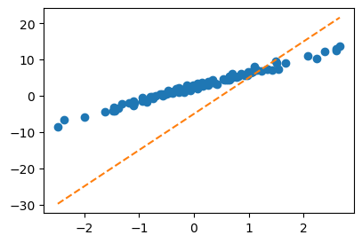
)🗣️
🗣️ 그냥 아무 직선을 그음 (2단계만 잘 되면 상관 X)
What = torch.tensor([[-5.0],[10.0]])
Whattensor([[-5.],
[10.]])yhat = X@What plt.plot(x,y,'o')
plt.plot(x,yhat.data,'--')
B. 2단계 – update
- ’적당한 정도’를 판단하기 위한 장치: loss function 도입!
\[loss=\sum_{i=1}^{n}(y_i-\hat{y}_i)^2=\sum_{i=1}^{n}(y_i-(\hat{w}_0+\hat{w}_1x_i))^2=({\bf y}-{\bf\hat{y}})^\top({\bf y}-{\bf\hat{y}})=({\bf y}-{\bf X}{\bf \hat{W}})^\top({\bf y}-{\bf X}{\bf \hat{W}})\]
🗣️ loss는 \((\hat{w}_0, \hat{w}_1)\)을 입력으로 받음. loss 값을 최소로 만드는 \((\hat{w}_0, \hat{w}_1)\)을 찾으면 됨.
- loss 함수의 특징: 위 그림의 주황색 점선이 ‘적당할 수록’ loss값이 작다.
plt.plot(x,y,'o')
plt.plot(x,yhat)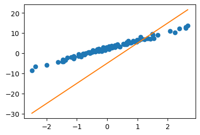
loss = torch.sum((y-yhat)**2)
losstensor(8587.6875)- 우리의 목표: 이 loss(=8587.6275)을 더 줄이자.
- 궁극적으로는 아예 모든 조합 \((\hat{w}_0,\hat{w}_1)\)에 대하여 가장 작은 loss를 찾으면 좋겠다.
- 문제의 치환: 생각해보니까 우리의 문제는 아래와 같이 수학적으로 단순화 되었다.
- 가장 적당한 주황색 선을 찾자 \(\to\) \(loss(\hat{w}_0,\hat{w}_1)\)를 최소로하는 \((\hat{w}_0,\hat{w}_1)\)의 값을 찾자.
- 수정된 목표: \(loss(\hat{w}_0,\hat{w}_1)\)를 최소로 하는 \((\hat{w}_0,\hat{w}_1)\)을 구하라.
- 단순한 수학문제가 되었다. 이것은 마치 \(f(x,y)\)를 최소화하는 \((x,y)\)를 찾으라는 것임.
- 함수의 최대값 혹은 최소값을 컴퓨터를 이용하여 찾는것을 “최적화”라고 하며 이는 산공교수님들이 가장 잘하는 분야임. (산공교수님들에게 부탁하면 잘해줌, 산공교수님들은 보통 최적화해서 어디에 쓸지보다 최적화 자체에 더 관심을 가지고 연구하심)
- 최적화를 하는 방법? 경사하강법
# 경사하강법 아이디어 (1차원)
- 임의의 점을 찍는다.
- 그 점에서 순간기울기를 구한다. (접선) <– 미분
- 순간기울기(=미분계수)의 부호를 살펴보고 부호와 반대방향으로 움직인다.
팁: 기울기의 절대값 크기와 비례하여 보폭(=움직이는 정도)을 조절한다. \(\to\) \(\alpha\)를 도입
최종수식: \(\hat{w} \leftarrow \hat{w} - \alpha \times \frac{\partial}{\partial w}loss(w)\)
#
🗣️(
- 보폭: step size
- 함수를 최고차항이 양수인 2차 함수로 생각하면 이해하기 쉬움
- x에서 a만큼 오른쪽으로 이동: x + a
- x에서 a만큼 왼쪽으로 이동: x - a
- 미분계수가 0인쪽으로 움직일 때
- x가 오른쪽에 있으면 미분계수 > 0
- x가 왼쪽에 있으면 미분계수 < 0
- 미분계수가 0인쪽과 가까울수록 접선 기울기의 절대값이 작아짐 -> \(\alpha\)로 조절
- \(\alpha\)가 너무 작으면 수렴 속도가 느릴 수 있고, 너무 크면 수렴을 안할 수 있음
- 예시) \(f(x) = x^2\) 에서 \(x=2\)일 때 \(\alpha = 1\)이면 \(x\)는 \(-2\)와 \(2\)만 왔다갔다 함
)🗣️
# 경사하강법 아이디어 (2차원)

- 임의의 점을 찍는다.
- 그 점에서 순간기울기를 구한다. (접평면) <– 편미분
- 순간기울기(=미분계수)의 부호를 살펴보고 부호와 반대방향으로 각각 움직인다.
팁: 여기서도 기울기의 절대값 크기와 비례하여 보폭(=움직이는 정도)을 각각 조절한다. \(\to\) \(\alpha\)를 도입.
#
🗣️(
- 여기서 임의의 점은 2차원
- 편미분: 하나만 변수로 보고 나머지 고정
- 이후 1차원 방식과 동일
- 어떤 방향(왼쪽, 오른쪽)으로 얼마나 갈 지(\(\alpha\))
)🗣️
- 경사하강법 = loss를 줄이도록 \({\bf \hat{W}}\)를 개선하는 방법
- 업데이트 공식: 수정값 = 원래값 - \(\alpha\) \(\times\) 기울어진크기(=미분계수)
- 여기에서 \(\alpha\)는 전체적인 보폭의 크기를 결정한다. 즉 \(\alpha\)값이 클수록 한번의 update에 움직이는 양이 크다.
🗣️ \(\alpha\)를 ML에서는 학습률이라고 함
- loss는 \(\hat{\bf W} =\begin{bmatrix} \hat{w}_0 \\ \hat{w}_1 \end{bmatrix}\) 에 따라서 값이 바뀌는 함수로 해석가능하고 구체적인 형태는 아래와 같음.
\[ loss(\hat{w}_0,\hat{w}_1) := loss(\hat{\bf W})=\sum_{i=1}^{n}(y_i-(\hat{w}_0+\hat{w}_1x_i))^2=({\bf y}-{\bf X}{\bf \hat{W}})^\top({\bf y}-{\bf X}{\bf \hat{W}})\]
따라서 구하고 싶은것은 아래와 같음
\[\hat{\bf W}^{LSE} = \underset{\bf \hat{W}}{\operatorname{argmin}} ~ loss(\hat{\bf W})\]
Warning
아래의 수식
\[\hat{\bf W}^{LSE} = \underset{\bf \hat{W}}{\operatorname{argmin}} ~ loss(\hat{\bf W})\]
은 아래와 같이 표현해도 무방합니다.
\[\hat{\bf W} = \underset{\bf W}{\operatorname{argmin}} ~ loss({\bf W})\]
마치 함수 \(f(\hat{x})=({\hat x}-1)^2\) 을 \(f(x)=(x-1)^2\) 이라고 표현할 수 있는 것 처럼요..
여기까지 01wk-2에서 수업했습니다~
여기부터는 02wk-1에서..
# 지난시간 복습
# x,X,W,y // X = [1 x], W = [w0, w1]' # 회귀분석에서는 W=β
# 회귀모형: y=X@W+ϵ = X@β+ϵ
# true: E(y)=X@W
# observed: (x,y)
# estimated W = What = [w0hat, w1hat]' <-- 아무값이나넣었음..
# estimated y = yhat = X@What = X@β̂
# loss = yhat이랑 y랑 얼마나 비슷한지 = sum((y-yhat)^2)
# (x,y) 보고 최적의 선분을 그리는것 = loss를 가장 작게 만드는 What = [w0hat, w1hat] 를 찾는것
# 전략: (1) 아무 What나 찍는다 (2) 그거보다 더 나은 What을 찾는다. (3) 1-2를 반복한다.
# 전략2가 어려운데, 이를 수행하는 방법이 경사하강법
# 경사하강법 알고리즘: 더나은What = 원래What - 0.1*미분값What = torch.tensor([[-5.0],[10.0]])
Whattensor([[-5.],
[10.]])yhat = X@What
plt.plot(x,y,'o')
plt.plot(x,yhat,'--')
loss = torch.sum((y-yhat)**2)
losstensor(8587.6875)복습끝~
#
- 더 나은 선으로 업데이트하기 위해서는 공식 “더나은What = 원래What - 0.1*미분값” 를 적용해야하고 이를 위해서는 미분값을 계산할 수 있어야 함.
Important
경사하강법을 좀 더 엄밀하게 써보자. 경사하강법은 \(loss(\hat{\bf W})\)를 최소로 만드는 \(\hat{\bf W}\)를 컴퓨터로 구하는 방법인데, 구체적으로는 아래와 같다.
1. 임의의 점 \(\hat{\bf W}\)를 찍는다.
2. 그 점에서 순간기울기를 구한다. 즉 \(\left.\frac{\partial}{\partial {\bf W}}loss({\bf W})\right|_{{\bf W}=\hat{\bf W}}\) 를 계산한다.
3. \(\hat{\bf W}\)에서의 순간기울기의 부호를 살펴보고 부호와 반대방향으로 움직인다. 이때 기울기의 절대값 크기와 비례하여 보폭(=움직이는 정도)을 각각 조절한다. 즉 아래의 수식에 따라 업데이트 한다.
\[\hat{\bf W} \leftarrow \hat{\bf W} - \alpha \times \left.\frac{\partial}{\partial {\bf W}}loss({\bf W})\right|_{{\bf W}=\hat{\bf W}}\]
여기에서 맨 마지막 수식을 간단하게 쓴 것이 더나은What = 원래What - 0.1*미분값 이다.
- 미분값을 계산하는 방법1
# 손실 8587.6875 를 계산하는 또 다른 방식
def l(w0,w1):
yhat = w0 + w1*x
return torch.sum((y-yhat)**2)l(-5,10)tensor(8587.6875)🗣️(
- 굳이 함수를 만든 이유: 미분하려고
- 편미분 구현
- l(-5,10)
- (l(w0+h,w1) - l(w0,w1))/h: 도함수
)🗣️
h=0.001
print((l(-5+h,10) - l(-5,10))/h)
print((l(-5,10+h) - l(-5,10))/h)tensor(-1341.7968)
tensor(1190.4297)일단 이거로 업데이트해볼까?
# 더나은What = 원래What - 0.1*미분값
# [-5,10] - 0.001 * [-1341.7968,1190.4297]sssss = What - 0.001 * torch.tensor([[-1341.7968],[1190.4297]])
ssssstensor([[-3.6582],
[ 8.8096]])plt.plot(x,y,'o')
plt.plot(x,X@What,'-') # 원래What: 주황색
plt.plot(x,X@sssss,'-') # 더나은What: 초록색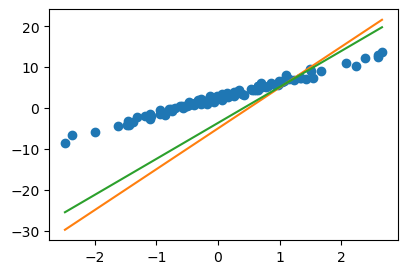
- 잘 된 것 같긴한데..
- 미분구하는게 너무 어려워..
- 다른 방법 없을까?
Important
사실 이 방법은
- \(\frac{\partial}{\partial w_0}loss(w_0,w_1) \approx \frac{loss(w_0+h,w_1)-loss(w_0,w_1)}{h}\)
- \(\frac{\partial}{\partial w_1}loss(w_0,w_1) \approx \frac{loss(w_0,w_1+h)-loss(w_0,w_1)}{h}\)
이 계산을 이용하여
\[\frac{\partial}{\partial {\bf W}}loss({\bf W}):= \begin{bmatrix} \frac{\partial}{\partial w_0} \\ \frac{\partial}{\partial w_1}\end{bmatrix}loss({\bf W}) = \begin{bmatrix} \frac{\partial}{\partial w_0}loss({\bf W}) \\ \frac{\partial}{\partial w_1}loss({\bf W})\end{bmatrix} = \begin{bmatrix} \frac{\partial}{\partial w_0}loss(w_0,w_1) \\ \frac{\partial}{\partial w_1}loss(w_0,w_1)\end{bmatrix}\]
를 계산한 것이라 볼 수 있죠
- 미분값을 계산하는 방법2
## 약간의 지식이 필요함.
# loss = (y-XWhat)'(y-XWhat)
# = (y'-What'X')(y-XWhat)
# = y'y-y'XWhat -What'X'y + What'X'XWhat
# loss를 What으로 미분
# loss' = -X'y - X'y + 2X'XWhat❓ 행렬 미분 복습 필요
-2*X.T@y + 2*X.T@X@Whattensor([[-1342.2524],
[ 1188.9302]])🗣️ 약간의 오차는 있지만 위와 비슷 (그러나 방법1, 방법2 말고 다른 방법을 쓰고 싶음)
Important
이 방법은 \(loss({\bf W})\)의 미분을 구할수 있어야 사용가능합니다. 즉
\[\frac{\partial}{\partial {\bf W}}loss({\bf W})= -2{\bf X}^\top {\bf y} + 2{\bf X}^\top {\bf X}{\bf W}\]
를 계산할 수 있어야 합니다.
- 미분값을 계산하는 방법3 – 이 패턴을 외우세여
What = torch.tensor([[-5.0],[10.0]],requires_grad=True)
Whattensor([[-5.],
[10.]], requires_grad=True)yhat = X@What
loss = torch.sum((y-yhat)**2)
losstensor(8587.6875, grad_fn=<SumBackward0>)🗣️ 꼬리표가 있긴하지만 결과는 위와 동일
loss.backward() # loss를 미분하라.. 꼬리표가 있게 한 What으로.. 🗣️(
- loss를 What으로 미분
- 일반적으로 미분을 하면 도함수가 나오지만, 이 경우는 도함수에서 현재 What값을 대입한 결과가 나옴
- 정확히 말하면 What에 해당하는 접선의 기울기
- 실행해도 실행결과는 나오지 않음. 결과는 What.grad에 저장되어 있음
)🗣️
What.gradtensor([[-1342.2524],
[ 1188.9305]])- 위의 코드를 다시 복습해보자.
– loss.backward()실행전 –
What = torch.tensor([[-5.0],[10.0]],requires_grad=True)
yhat = X@What
loss = torch.sum((y-yhat)**2)What.data, What.grad(tensor([[-5.],
[10.]]),
None)🗣️ .backward()를 실행하지 않아서 .grad에 아무 값도 없음(None으로 초기화 됨)
– loss.backward()실행후 –
loss.backward()What.data, What.grad(tensor([[-5.],
[10.]]),
tensor([[-1342.2524],
[ 1188.9305]]))🗣️(
- .backward()를 실행하니 .grad에 기울기 값이 계산되어 업데이트 됨
- loss.backward(): What.grad <- What에서 미분값 인줄 알았으나 사실은
- loss.backward(): What.grad <- What.grad + What에서 미분값 (즉, 누적을 시켜서 더함)
What = torch.tensor([[-5.0],[10.0]],requires_grad=True)yhat = X@What
loss = torch.sum((y-yhat)**2)
loss.backward()What.data, What.grad(tensor([[-5.],
[10.]]),
tensor([[-1342.2524],
[ 1188.9305]]))yhat = X@What
loss = torch.sum((y-yhat)**2)
loss.backward()What.data, What.grad(tensor([[-5.],
[10.]]),
tensor([[-2684.5049],
[ 2377.8611]]))- 두 배가 됨
- 왜?
- 산공: 알고리즘 상에서는 What.grad의 값은 loss.backward()를 할때마다 초기화가 맞음 (이론적으로는 이게 맞음)
- 컴공: 그러면 나중에 계산 효율이 안 좋아짐 (웬만하면 계산한 미분값을 갖고 있고 싶음, 필요 없으면 따로 초기화하면 됨)
- 통계: 최적화와 미분 빨리하는 것에 관심 X
)🗣️
✍️ 이후 원활한 코드 실행을 위한 코드 (의미X)
What = torch.tensor([[-5.0],[10.0]],requires_grad=True)
yhat = X@What
loss = torch.sum((y-yhat)**2)
What.data, What.grad
loss.backward()
What.data, What.grad(tensor([[-5.],
[10.]]),
tensor([[-1342.2524],
[ 1188.9305]]))# 1회 업데이트 과정을 차근차근 시각화하며 정리해보자.
alpha = 0.001
print(f"{What.data} -- 수정전")
print(f"{-alpha*What.grad} -- 수정하는폭")
print(f"{What.data-alpha*What.grad} -- 수정후")
print(f"{torch.tensor([[2.5],[4]])} -- 참값(이건 비밀~~)")tensor([[-5.],
[10.]]) -- 수정전
tensor([[ 1.3423],
[-1.1889]]) -- 수정하는폭
tensor([[-3.6577],
[ 8.8111]]) -- 수정후
tensor([[2.5000],
[4.0000]]) -- 참값(이건 비밀~~)🗣️(
- \(\alpha\)를 0.001로 잡은 이유: 미분값이 1000 단위로 나와서 그대로 넣으면 원하는 결과가 안 나올 것 같음
- 잘 수렴될때까지 시행착오를 겪으며 해봐야 함
- 수정하는 폭: 위 그래프에서 주황색 선
- 수정 후: 위 그래프에서 초록색 선
- 수정 전보다 수정 후가 참값에 가까우므로 올바른 방향을 진행되고 있음을 알 수 있음
)🗣️
Wbefore = What.data
Wafter = What.data - alpha * What.grad
Wbefore, Wafter(tensor([[-5.],
[10.]]),
tensor([[-3.6577],
[ 8.8111]]))plt.plot(x,y,'o',label=r'observed data')
plt.plot(x,X@Wbefore,'--', label=r"$\hat{\bf y}_{before}={\bf X}@\hat{\bf W}_{before}$")
plt.plot(x,X@Wafter,'--', label=r"$\hat{\bf y}_{after}={\bf X}@\hat{\bf W}_{after}$")
plt.legend()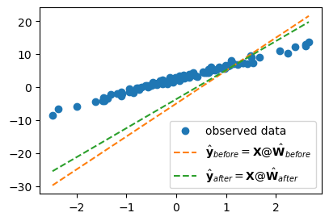
#
C. 3단계 – iteration (=learn = estimate \(\bf{\hat W}\))
- 이제 1단계와 2단계를 반복만하면된다. 그래서 아래와 같은 코드를 작성하면 될 것 같은데…
What = torch.tensor([[-5.0],[10.0]],requires_grad=True) # 최초의 직선을 만드는 값
for epoc in range(30):
yhat = X@What
loss = torch.sum((y-yhat)**2)
loss.backward()
What.data = What.data - 0.001 * What.grad돌려보면 잘 안된다.
🗣️ 원래 철자는 epoch이지만 편의상 epoc으로 작성, 잘 되기 위해서는 마지막에 초기화를 해줘야 함
- 아래와 같이 해야한다.
What = torch.tensor([[-5.0],[10.0]],requires_grad=True) # 최초의 직선을 만드는 값
for epoc in range(30):
yhat = X@What
loss = torch.sum((y-yhat)**2)
loss.backward()
What.data = What.data - 0.001 * What.grad
What.grad = None plt.plot(x,y,'o',label=r"observed: $(x_i,y_i)$")
plt.plot(x,X@What.data,'--o', label=r"estimated: $(x_i,\hat{y}_i)$ -- after 30 iterations (=epochs)", alpha=0.4 )
plt.legend()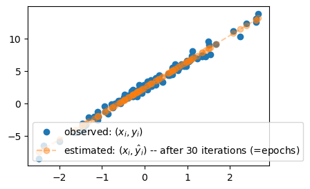
- 왜? loss.backward() 는 아래의 역할을 하는것 처럼 이해되었지만
What.grad\(\leftarrow\)What에서미분값
실제로는 아래의 역할을 수행하기 때문이다. (컴퓨터공학적인 이유로..)
What.grad\(\leftarrow\)What.grad+What에서미분값
Note
What.grad \(\leftarrow\) What.grad + What에서미분값 임을 확인하기 위해서.. 약간의 테스트를 했습니다.
먼저
What = torch.tensor([[-5.0],[10.0]],requires_grad=True) # 최초의 직선을 만드는 값
print(What.data)
print(What.grad)를 확인한뒤 아래를 반복실행해봤을때
yhat = X@What
loss = torch.sum((y-yhat)**2)
loss.backward() #
print(What.data)
print(What.grad)What.data와 What.grad 값이 계속 일정하게 나온다면
What.grad\(\leftarrow\)What에서미분값
이와 같은 계산이 진행되는 것이겠고, What.grad의 값이 자꾸 커진다면
What.grad\(\leftarrow\)What.grad+What에서미분값
이와 같은 계산이 진행되는 것이겠죠?